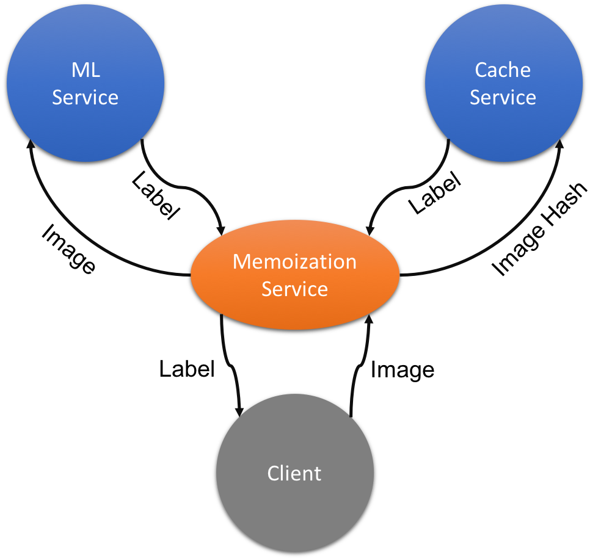

Overview
Reasoning about large, complex, and distributed applications can be very challenging. In single node applications, we deal with complexity through libraries and functions. However, these are still all linked together at compile time and can't change while the application is running. To help manage this complexity, and to allow different teams to develop their modules independently, many companies organize their applications around microservices. Microservices are small programs with a well-defined (and usually network-based) interface that rarely changes. If we need more scale, we simply run more copies of the program on different nodes. If there is a new feature or bug fix, we can roll it out slowly by replacing only a few of the copies at a time. Finally, this type of deployment can be tolerant of faults since each service is only responsible for a limited part of the whole application, and there are usually many copies of each service to chose from if something goes wrong.
Microservices are a form of concurrency. In this context, concurrency refers to doing many different tasks at the same time. One task could be handling client requests, while the other provides a database, and another logs performance data. This is slightly different than the sort of parallelism you've seen so far in this class (such as Spark or OpenMP) because those frameworks execute the same basic task across many nodes (for example, many mappers running the same map function). The inventer of the Go programming language has a pretty good talk on this difference and why it matters in Go here.
Task
In this project, you will be designing a memoization service. Memoization is an optimization technique where you try to remember the outcome of some expensive computation so that you don't have to run it again if you see the same input again. In this example, we will be memoizing the result of a machine-learning model. Clients will send your service a request to classify an image (hand-written digits in this case), if you've never seen the image before, you can ask the machine-learning microservice to classify it, but ML models can be expensive and slow to run. To speed things up, your service will need to save the classification of that image in a caching service. The next time the same image is requested, you can answer from the cache instead of the ML model, improving average performance by quite a bit. Together, the whole application will look something like this:
Go
You will be using the Go programming language for this project. Go is a good choice for this sort of thing for a number of reasons. Firstly, Go was designed from the ground up to support concurrency. Second, Go has very robust and easy-to-use testing tools. You should expect to write at least as many lines of unit tests as you do application code. Finally, Go is a fairly new language that tries to find a happy medium of performance (through compilation) and safety (through strict typing and garbage collection). Go is very similar to C in many ways so it should look fairly familiar to you (like learning Italian if you already know Spanish). However, it is also not so similar to C in many ways so your first task in this project will be to learn Go! Fortunately, there are excellent tools for this. I'll list a few here:
- Basic Installation Instructions: Go is available on the Hive machines, but you'll probably want to get it working locally to ease development.
- Overview of Go tools and other practical things: Go is very particular about how files are layed out on your computer and a few environment variables, be sure to read this whole document before trying to write your own Go code! Of particular importance is making sure you have the environment variable $GOPATH set correctly since all the go tools (and these instructions) rely on this. This will be set automatically on the Hive machines, but you'll need to set it up on your local machine.
- Go Language Tutorial: While you're encouraged to go through this entire tutorial, you probably won't need all of it. You should focus on the first two sections of "Basics" ("packages, variables, and functions" and "Flow control statements") and "Concurrency" (the main focus of this project).
hint: The word "Go" isn't easily googled, so you should use the term "golang" in any searches.
Setup
Before starting, make sure you've gone through the tutorials above and
can at least run "hello world". Imporant: your
$GOPATH environment variable should be set to your go directory. Test this
now by typing echo $GOPATH. If you don't see the path to your
go folder, re-read the documentation on
workspaces and try to set up your environment and paths correctly before
continuing. These instructions won't work if your $GOPATH is wrong.
Your directory tree should look something like:
-$GOPATH/
-bin/
-hello
-src/
-hello/
-hello.go
-hello
...
If you did the full tour of go, it's likely you'll have considerably more directories under "src", and you'll likely have a "~/go/pkg" directory. Everytime a new library or package is installed (either explicitly using "go get" or automatically by Go when it sees a dependency), it will be added to your src/ directory.
We have provided the classifier and cache services as a Go package. You can install them by running the following command anywhere in your go workspace:
go get github.com/61c-teach/sp18-proj5
This command could take a while to run. You may see some warnings (e.g. about "linear.cpp"); these can be safely ignored. Before you even start with your code, make sure this new package works by running the unit tests:
cd $GOPATH/src/github.com/61c-teach/sp18-proj5
source env.sh
go test
You should see all tests passing. The "env.sh" sets up some environment variables to work around a bug in the classifier, you'll need to "source" it (like above) before running anything that uses the classifier (like your code).
Note: The source command reads a shell script and executes it exactly as if you had typed the contents yourself. This lets you change your current shell (e.g. to setup environment variables). Most shell scripts create a new subshell before running, so changes to the environment wouldn't be saved.
Check your $GOPATH/src directory, you should see some new folders:
-$GOPATH/src
-hello/
-github.com/
-61c-teach/
-gonum/
-petar/
-sjwhitworth/
-gonum.org/
...
These new directories were automatically pulled in by Go. For example, classifier.go imports "github.com/petar/GoMNIST", which is a package to help read in the image files that we'll be classifying. You are free to import packages as well if they'll help you. Just make sure they can be imported automatically like this (typically if they are a public repo on a common site like github it will work). See the "Submission" section below for instructions on how to verify your code will work with our autograder.
Now you're ready to get started with your code. The first thing you'll need to do is create an empty bitbucket repo for this project, name it proj5-xxx (where xxx is your login). Next, create a folder for it in your local Go workspace. Go is very particular about where code lives in the workspace, so it's important that you create the directory scheme exactly as described. Once you have the directory setup, you can clone your (currently empty) repo into it:
mkdir -p $GOPATH/src/bitbucket.org/YOUR_BITBUCKET_LOGIN
cd $GOPATH/src/bitbucket.org/YOUR_BITBUCKET_LOGIN
git clone https://bitbucket.org/YOUR_BITBUCKET_LOGIN/proj5-xxx.git
Don't forget to replace YOUR_BITBUCKET_LOGIN and proj5-xxx with your logins.
You can now populate it by grabbing the starter code we provide for you: proj5-starter.tar. You'll need to unpack the tar file in your proj5-xxx directory.
Hint: Tar files package up a bunch of files (and directories) into a single file to make it easier to share. They sometimes also include compression (e.g. .tar.gz). Google "extract tar file" to see how to unpack one.
Fun fact: Tar stands for "tape archive" and was originally designed for backing filesystems up onto large magnetic tapes. It's still used for that (my first internship was working with tar on tape drives), but it gets used for lots of other reasons now.
Once you've done this, run the unit tests using "go test". It should fail the unit test with the following error: "The cache didn't seem to help." This is because the starter code simply forwards all requests to the classifier, it doesn't cache at all. If you look in memoizer_test.go, you'll see that we time how long it takes to classify a bunch of images, then we time a second run of the same images. If the cache is working, the second run should be much faster than the first (at least 2x is required to pass the test, the staff solution is 10x faster).
Be sure to commit these new files so you have a clean initial commit (you'll probably want to delete proj5-starter.tar since it's not needed anymore).
You're now ready to start working on the project! Your go workspace should look something like:
-$GOPATH/src
-bitbucket.org/
-example_user/
-proj5-aaa/
-memoizer.go
-memoizer_test.go
-env.sh
-data/
-hello/
-github.com/
-61c-teach/
-gonum/
-petar/
-sjwhitworth/
-gonum.org/
...
Project Details: Part 1
Go's abstraction for concurrency is called "goroutines". Each goroutine runs on a different logical thread. The langauge runtime decides exactly which physical thread it runs on and when, this means that you (as the programmer) don't always know when/where a routine is executing. To help decouple them (so that you don't have to know), go provides an abstraction called channels. Channels are queues (FIFO) where a sending goroutine can push a message, and the receiving goroutine can pop. While it is possible to use locks and shared variables, this is discouraged in Go. If you haven't already, be sure to work through the tutorial on goroutines and channels.
In this project, each service that you'll be using takes the form of a goroutine. Each service also comes with a handle to help communicate with it. Handles package up a request channel and a response channel. Clients of the service send requests of the reqQ channel, and wait for responses on the the respQ. Look at the test files for each service to see how they get used. Notice how good unit tests not only serve to check code correctness, they are also a valuable source of documentation.
The Classifier Service
sp18-proj5/classifier.go
The classifier service is designed to translate hand-written digits from the classic MNIST dataset. The input to it is a []byte (byte slice, see the go tutorial on slices) which represents a 28x28 pixel image (784 pixels total). If you're curious, you can use the provided "Show" function in memoizer_test.go to save these images as pngs (like the example above). The classifier then runs an ensemble of support vector machine classifiers, one for each digit, and picks the most likely digit to return (as an int). Like every service in this project, the classifier accepts a request ID with every request, and returns that ID with the corresponding response. This allows for potentially out-of-order messages (which can occur due to network issues or from optimizations). Note that the current classifier implementation will always respond in order, but you are free to return messages out of order from your memoization service. Note also that the classifier response includes a potential error message. Under normal operation, this feild is always "nil", but it may contain an error message if something went wrong. You may not assume that all classification requests will succeed. Take a look at classifier_test.go for examples on how to use the classifier service.
The Cache Service
sp18-proj5/cache.go
The caching service is essentially a remote hash table. You give it key-value pairs and it saves them for later. You can then ask it if it's seen a particular key and it will return the corresponding value (if any). Caching services like this are extremely common in datacenters, examples include memcached and redis. Caching services reduce the load on other services by saving frequent or recent results. Our cache in this project is a very simple key-value store. You may assume that it will never fill up (no need to deal with eviction/replacement). You send it requests using the CacheReq struct which contains a read/write flag, a 64-bit key, an int value, and (like everything) a 64-bit requestID. If the request is a write, then the cache will not respond. If the request is a read, then the cache will respond with a CacheResp struct that contains an "exists" flag (true if the item was found) and the corresponding value (if any), and the requestID. Check out cache_test.go for examples on how to use it.
Note: The requestID only needs to be unique for reads from the cache. Write requests do not need to have unique requestIDs.
Note that the key is a 64-bit integer, but the images we are using are byte slices. To deal with this, you will need to use a hash of the image as a key. While there could, technically, be collisions on this hash function, the chances of that are sufficently low for our application to work (you may assume that collisions will never happen). Afterall, we are using machine learning to classify the images which is far more likely to give a bad label than a hash-collision would. We recommend taking a look at Go's crc64 hash function, although you are free to use any hash function you wish (so long as it has a similarly low collision probability). It's not recommended to write your own hash function, there are existing libraries for that sort of thing.
The Memoization Layer
proj5-xxx/memoizer.go
Your main task in this assignment is to write a memoization service. The memoization service will use the cache service to speed up requests to classify images that have already been seen before. This means that your code must be significantly faster to respond to images that have been seen before versus new images. Existing users of the classifier should be able to drop your memoization service in and immediately see benefits without changing any of their existing code. This means that your code must implement the exact same interface as the classifier. Note that the starter code we've given you simply forwards the client's requests to the classifier, and returns the classifier responses to the client. One difference is that you are permitted to return results out of order, so long as the message IDs match.
Memoizer Requirements:
- Must respond to previously-seen image requests significantly faster than new images.
- Must implement the same API as the classifier service. This means that you may not change the function signature, message types, or return different results (other than different orderings).
- May not panic/crash, even if the other services behave badly.
- Any errors in the cache service must be ignored (you can always ask the classifier again for the label).
- Any errors in the classifier that can't be serviced by the cache must be forwarded to the client.
- Any errors in the memoization service itself should return an error describing the problem (in the MnistResp err feild). You can use fmt.Errorf to generate the error, see here for more information about errors in go.
Testing: Part 2
More details about part 2 will be released early next week. Check back then for more details on specific testing requirements.
Testing is a central requirement of practical software development. It is common for there to be more test code than application code. Go makes this very easy (this is a quick rundown of testing in go, you can also just google for "golang testing"). We've provided a few tests to get you started, but they are not sufficient. You will need to write more tests to make sure your code meets all the requirements (especially the "may not panic/crash" requirement). The existing tests use the real classifier and cache, which are unlikely to fail or behave badly. You will likely need to implement dummy versions of these services that exhibit different types of errors. Note that these dummy services don't actually have to work at all, it may be enough to write a service that always responds to requests with some bogus error.
We will be providing a tool to help you evaluate your tests soon. To start with, just try to get the basic tests passing and start thinking about what else might go wrong.
Submission
We will be grading both your memoizer.go and memoizer_test.go files. Do not add any additional files or rename these files (or the functions within them). Before submitting, we recommend you test your code in a fresh go workspace. This makes sure that you're not relying on any uncommitted files or broken dependencies. To do this, create a new go directory, update your $GOPATH, and then clone and test your code:
export GOPATH=~/go_clean mkdir -p $GOPATH/src/bitbucket.org/YOUR_BITBUCKET_LOGIN cd $GOPATH/src/bitbucket.org/YOUR_BITBUCKET_LOGIN git clone https://bitbucket.org/YOUR_BITBUCKET_LOGIN/proj5-xxx.git cd proj5-xxx go get github.com/61c-teach/sp18-proj5 go test
If your tests pass in the clean go workspace, then we shouldn't have any trouble running it either. You can now delete the whole go_clean workspace and reset your GOPATH:
cd ~ rm -rf ~/go_clean/ export GOPATH=~/go
To submit, you must run the submit command from your proj5-xxx directory:
$ submit proj5
You must also make sure to create a tag in your bitbucket repo for your submission:
$ git add -u # should add all modified files in the memoizer directory $ git commit -m "Project 5 submission" $ git tag -f "proj5-sub" # The tag MUST be "proj5-sub". Failure to do so will result in loss of credit. $ git push origin master --tags # Note the "--tags" at the end. This pushes tags to bitbucket